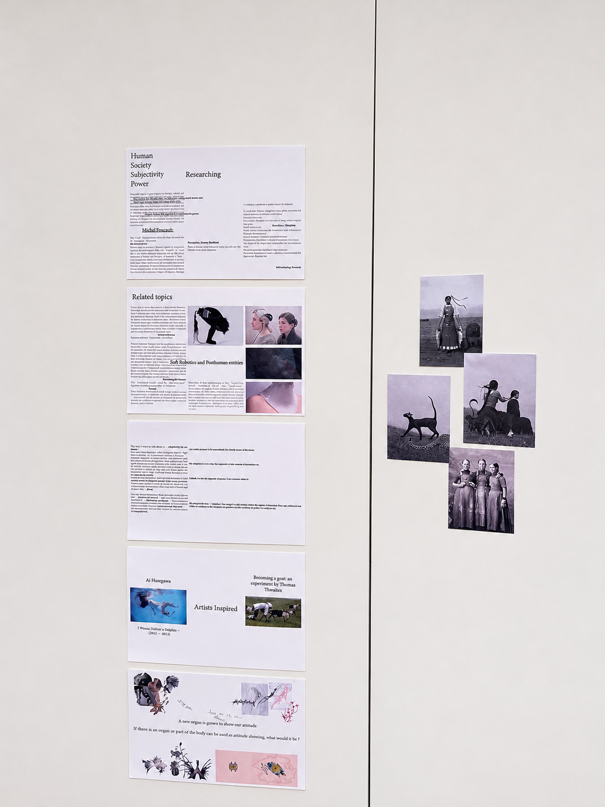
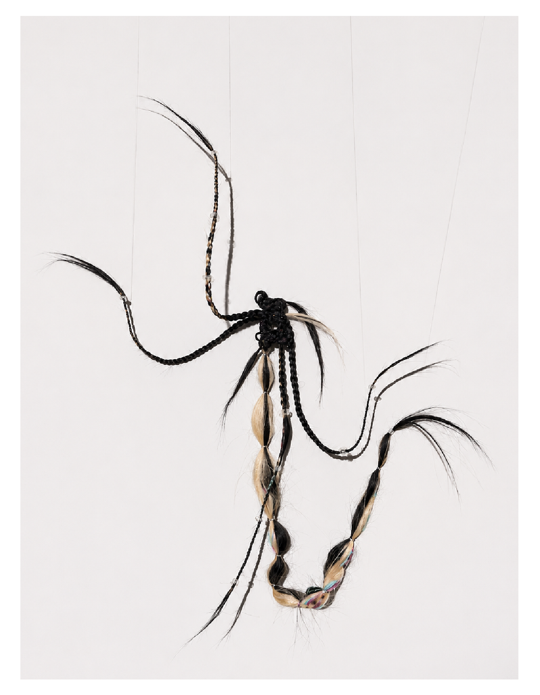
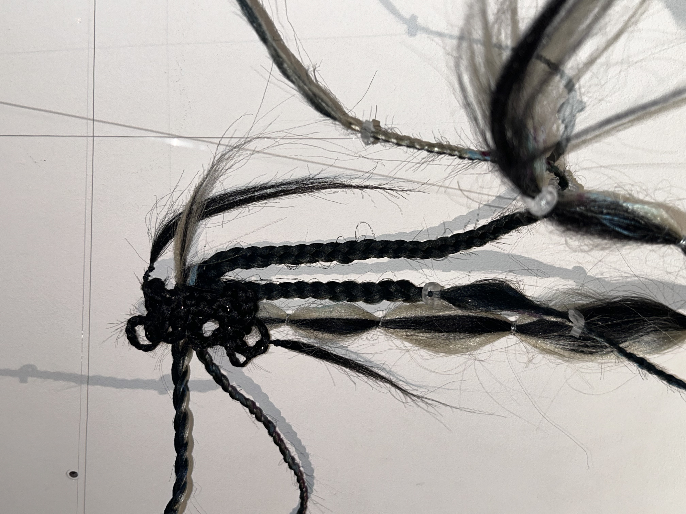
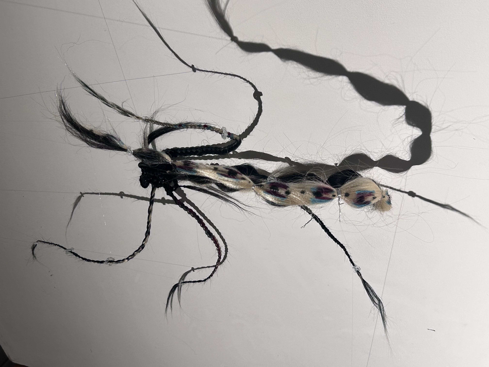

 exhibition
exhibition
I developed a new organ capable of expressing emotions such as anger, dissatisfaction, and other defensive or aggressive responses autonomously, operating beyond the direct control of the brain, much like the body’s internal systems.
Drawing from an imagined discovery in ancient texts, women’s hair was once believed to be connected to the nervous system, allowing it to levitate and form shapes that reflected emotional states in order to intimitade threats. Its function was similar to the warning displays of animal tails or intimidating patterns found in nature. However, as human society evolved, this ability gradually disappeared.
Throughout their upbringing, women are often conditioned to suppress and conceal their emotions. Growing up in Shanghai, one of the words I heard most frequently was ‘guai’(乖). Beneath its seemingly positive meaning, the word became an invisible mechanism of discipline and a constraint that shaped the process of growing up.


